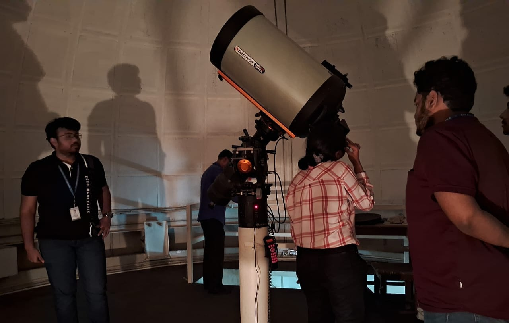

The Xaverian Astronomical Society, in association with the Postgraduate and Research Department of Physics, organised the National Science Day celebration on 28th February 2024 in Room 41 of St. Xavier’s College (Autonomous), Park Street, Kolkata.
The programme began with the Inaugural Address delivered by Rev. Dr. Dominic Savio SJ, Principal of St. Xavier’s College (Autonomous), Kolkata. This was followed by a short video prepared by the working committee, introducing the history and significance of National Science Day and the legacy of the Father Eugene Lafont Observatory.
